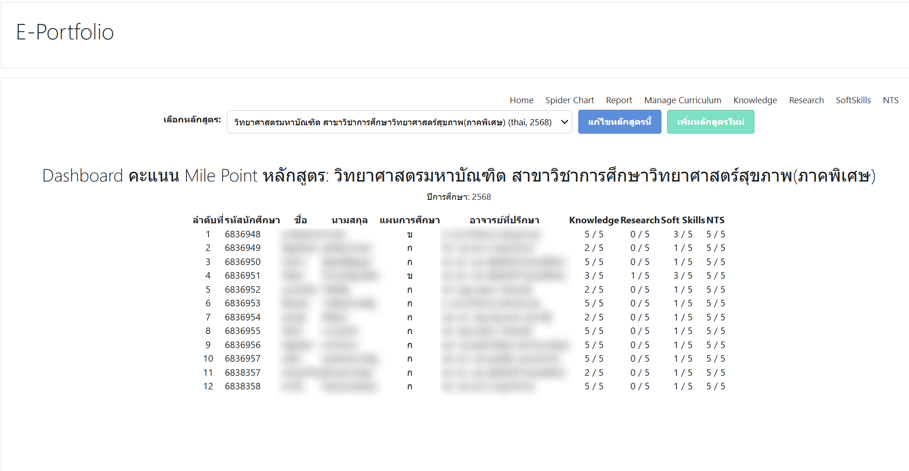

S01Admin only
Back to TOC
v_index.php
หน้าเริ่มต้นของระบบ, เลือก curriculum และเข้าหน้าควบคุมหลัก
จุดประสงค์
- เป็นประตูเข้าแดชบอร์ดของระบบ
- เลือก curriculum ก่อนเข้าข้อมูลรายคน
- กระโดดไปยัง student, research, softskills, NTS และ summary อื่น ๆ
ปุ่ม / ตัวควบคุม
| Control | ทำอะไร |
|---|---|
| Curriculum dropdown | เลือก `setid` |
| Student management link | ไป `v_manage_cur_student.php` |
| Sync / course link | ไปหน้าจัดการข้อมูลหรือรายวิชา |
| Dashboard links | เปิดหน้าสรุป domain ต่าง ๆ |
ขั้นตอนการใช้งาน
- เปิดหน้า `v_index.php`
- เลือก curriculum ที่ต้องการ
- ตรวจ summary และผลรวม milepoint ของหลักสูตร
- คลิกไปยังหน้ารายละเอียดหรือหน้าจัดการที่ต้องการ
ตารางที่เกี่ยวข้อง
mdl_a_cursetmdl_user_studentmdl_milepoint_view
หมายเหตุสำคัญ
- หน้าติดสิทธิ์ admin, ถ้าไม่ใช่ admin จะถูก redirect ออก
- เหมาะจะเป็นภาพหน้าแรกในคู่มือ เพราะสื่อ flow ทั้งระบบได้ดีที่สุด
